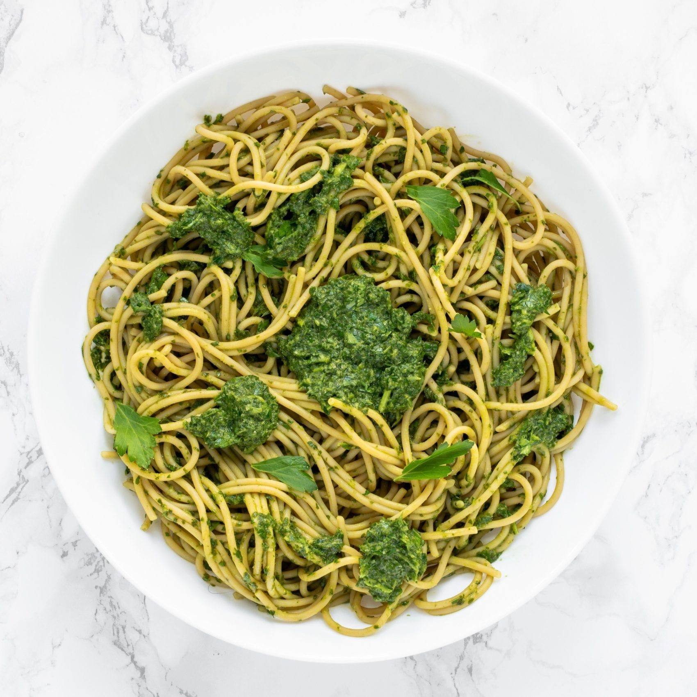

Pesto Pasta

A great pasta dish to whip up in a flash (15 minutes)
I found this recipe after a Google search born from being very hungry but lazy. You can make this in no time with some very basic ingredients and very minimal effort.
Ingredients
- ½ cup chopped onion
- 2½ tablespoons pesto
- 2 tablespoons olive oil
- 2 tablespoons grated Parmesan cheese
- 1 (16 ounce) package pasta
- salt to taste
- ground black pepper to taste
Steps
- Cook pasta in a large pot of boiling water until done. Drain.
- Meanwhile, heat the oil in a frying pan over medium low heat. Add pesto, onion, and salt
- In a large bowl, mix pesto mixture into pasta. Stir in grated cheese. Serve.